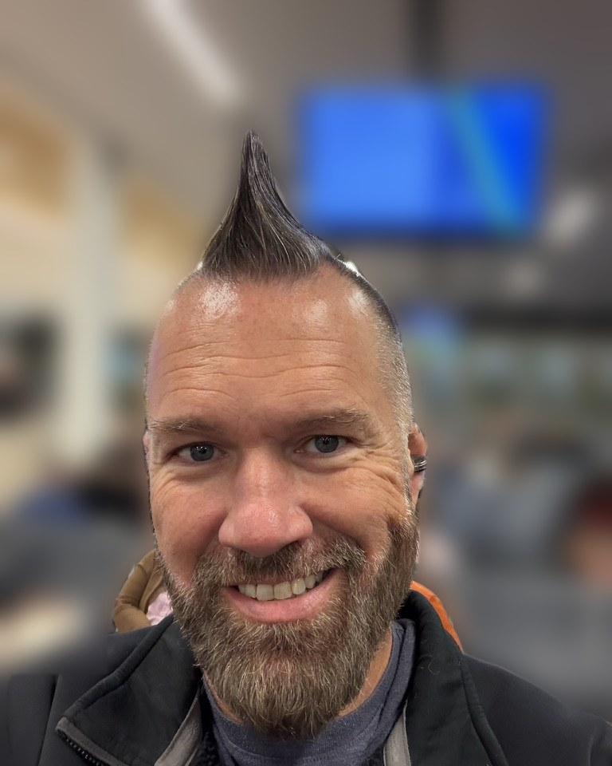
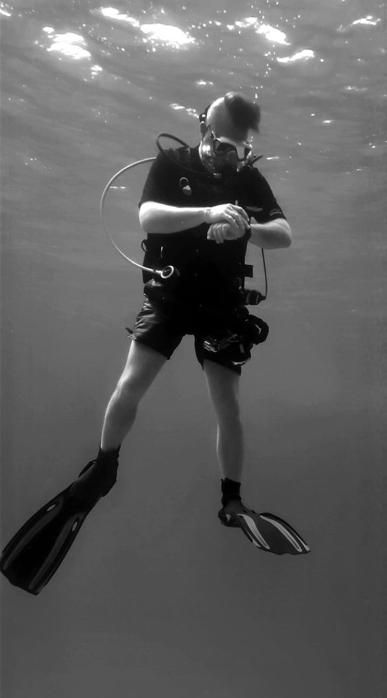
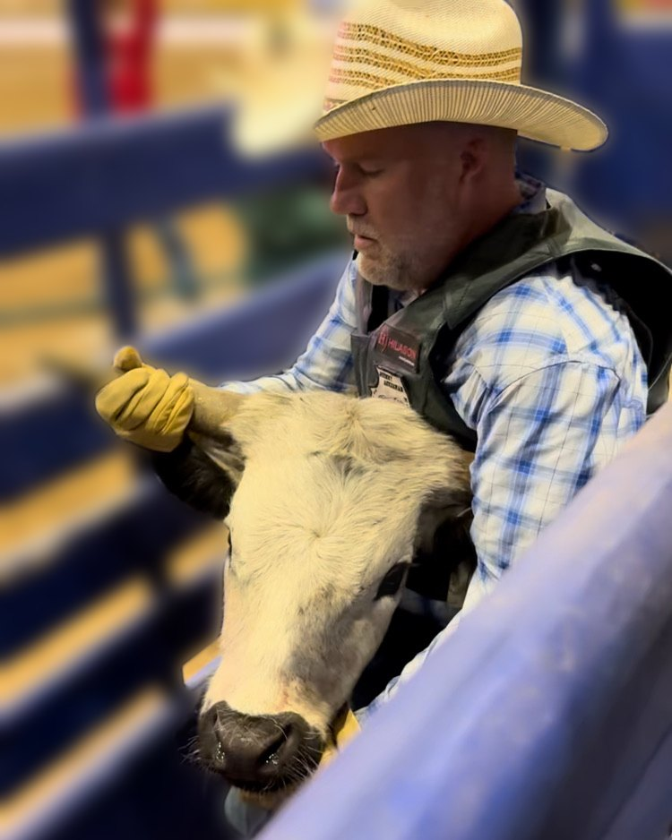

Ride Hard. Dive Deep.
I'm Ryan Villanueva, the founder of Iron Reef. My life runs in two directions, down into the water and out into the arena, and I've built this business around both.
I'm a PADI Divemaster who has been diving since 2015, and an IGRA rodeo competitor, rodeo school instructor and 2025 World Finals chute dogging champion.

A world few people ever see
I've been diving since 2015. My first certification dives were at Lake Wazee, a freshwater quarry in Wisconsin. Since then I've logged more than 200 recreational dives, plus countless training dives, across the Caribbean, Mexico, Colorado and Utah. In 2024 I earned my PADI Divemaster certification.
What keeps me coming back is the serenity. Underwater, the world goes quiet except for the sound of your own bubbles, and you get to experience a place that few people on this planet ever will.

From first rodeo to World Finals
I went to my first gay rodeo on April 27, 2019, in Little Rock, Arkansas, hosted by the Diamond State Rodeo Association. Later that season I competed for the first time at the Rocky Mountain Regional Rodeo in Denver and placed in steer decorating on my very first attempt.
Over the years I've grown into all three camp events, chute dogging and calf roping on foot, and in 2026 I added barrel racing, flag racing and pole bending. In 2022 I won my first buckle at the Show Me State Rodeo in Sedalia, Missouri, and competed in my first World Finals that same year. In 2025 I earned my first World Finals buckle, winning chute dogging with first-place finishes both days in Reno, Nevada, the year IGRA celebrated 50 years of gay rodeo.
I also serve as IGRA's Contestant Liaison, the bridge between contestants and officials on rough stock matters and on patterns for the speed events, where I usually work alongside a partner. The role has made me a go-to resource for new and seasoned contestants alike.

Paying it forward
My passion for rodeo is tied to the people who helped me become a strong competitor. The way they showed up for me inspired me to do the same for others. I now teach rodeo schools across the circuit and work with new competitors at every rodeo I can.
Nothing beats watching someone new find the same thrill I did: wrestling steers in the dirt, riding through the arena, getting bucked off the back of a steer in a dress and a wig, and playing in the dirt with people who love it as much as they do.
- 2015First certification dives at Lake Wazee, Wisconsin
- 2019First gay rodeo in Little Rock, Arkansas, then first competition at the Rocky Mountain Regional Rodeo in Denver, placing in steer decorating
- 2022First buckle at the Show Me State Rodeo in Sedalia, Missouri, and first World Finals
- 2024Certified PADI Divemaster
- 2025First World Finals buckle: chute dogging champion in Reno, Nevada, during IGRA's 50th year
- 2026Added barrel racing, flag racing and pole bending
Work with me
Whether you're getting ready for your first rodeo or planning your next dive trip, send me a note.